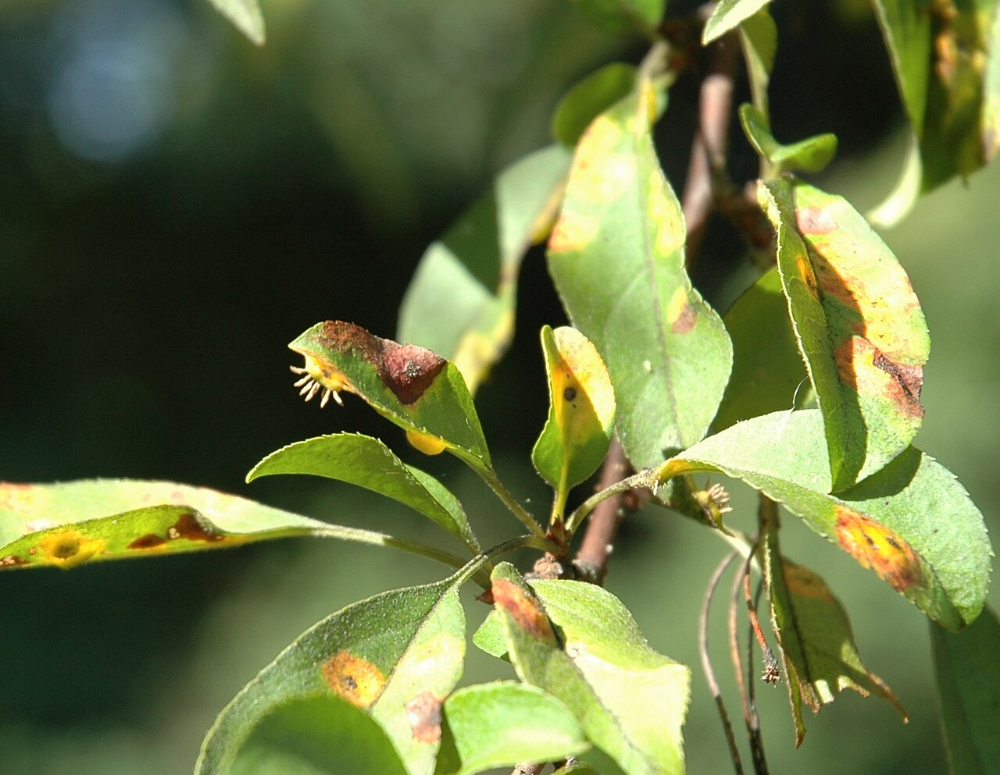

Berkeley plant identification
Apple
Malus domestica
Use this page to learn the season, field marks, caution notes, and deck-use context already in the Forage Berkeley deck. It is for recognition practice, not eating or harvesting guidance.

Learning labelEdible
OriginIntroduced
Plant typeTree
Safety note: Forage Berkeley is a learning aid, not a safety authority. Never eat, handle, harvest, or prepare a plant based on this app alone. This page is for recognition practice only. The use notes below are deck context, not eating clearance or preparation advice.
How to recognize it
- Season
- Fruit late summer–fall
- Identification features
- Spreading tree, oval toothed leaves, white-pink five-petal blossoms in spring, familiar pome fruit.
- Deck caution note
- For recognition practice, the deck notes: Eat the flesh; don't eat large amounts of seeds (they contain cyanogenic compounds).
- Deck use context
- Learning context only, not eating or preparation advice. The deck notes: Fruit fresh, in sauce, cider, or baking.